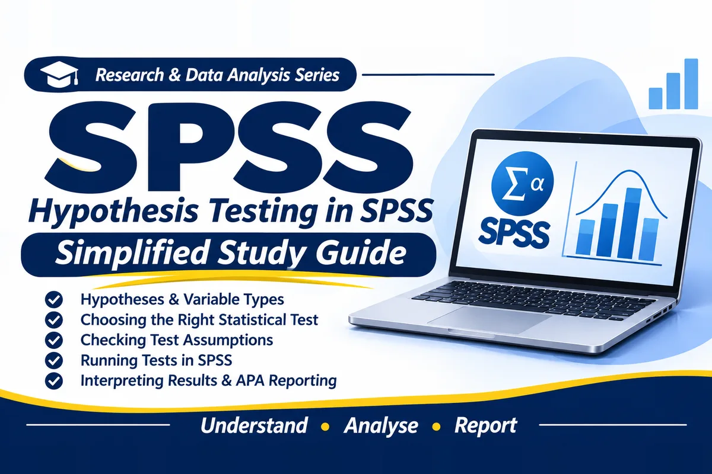

Hypothesis testing in SPSS: a step-by-step guide

Hypothesis testing is a core part of dissertation statistics, but many students struggle with choosing the correct test, checking assumptions and interpreting results. This guide walks through the whole process in SPSS, from forming hypotheses to writing APA-style results.
1. Understand what hypothesis testing means
Before using SPSS, you must understand what you are testing.
- Null hypothesis (H₀): there is no effect, no relationship or no difference.
- Alternative hypothesis (H₁): there is an effect, a relationship or a difference.
Example
- H₀: males and females do not differ in motivation scores.
- H₁: males and females differ in motivation scores.
SPSS helps you decide which hypothesis is supported by your data.
2. Identify your variables and their types
| Variable type | Description | Example |
|---|---|---|
| Nominal | Categories | Gender, marital status |
| Ordinal | Ranked categories | Likert scales |
| Scale | Numerical measurement | Age, income, motivation score |
3. Choose the correct hypothesis test in SPSS
Selecting the right test is the most important part of hypothesis testing.
Use this simple decision guide:
| Research goal | SPSS test |
|---|---|
| Compare 2 independent groups | Independent t-test |
| Compare 1 group before and after | Paired t-test |
| Compare 3 or more groups | One-way ANOVA |
| Test relationship strength | Pearson or Spearman correlation |
| Test association between categories | Chi-square test |
| Predict an outcome | Regression analysis |
4. Check assumptions before running the test
SPSS will run a test even if the assumptions are violated, but your result will be invalid.
- Normality: use Shapiro-Wilk or Kolmogorov-Smirnov.
- Homogeneity of variance: use Levene’s test (important for t-tests and ANOVA).
- Linearity: use scatterplots (important for regression and correlation).
- No multicollinearity: check VIF values in regression.
- Independence of observations.
If assumptions fail, use a non-parametric test such as Mann-Whitney, Kruskal-Wallis or Spearman.
5. Run the hypothesis test in SPSS
Here is how to run each major test.
A. Independent samples t-test
Example: compare male and female scores.
- Click Analyze.
- Select Compare Means.
- Choose Independent-Samples T Test.
- Move your dependent variable to Test Variable.
- Move your group variable (for example, gender) to Grouping Variable.
- Define the groups.
- Click OK.
B. One-way ANOVA
Example: compare satisfaction across 3 departments.
- Go to Analyze → Compare Means → One-Way ANOVA.
- Move the dependent variable to Dependent List.
- Move the independent variable to Factor.
- Click Post Hoc (Tukey is recommended).
- Click OK.
C. Chi-square test
Example: association between gender and preference.
- Go to Analyze → Descriptive Statistics → Crosstabs.
- Place the variables in rows and columns.
- Click Statistics.
- Select Chi-square.
- Click OK.
D. Correlation (Pearson or Spearman)
- Go to Analyze → Correlate → Bivariate.
- Select the variables.
- Choose Pearson (normal data) or Spearman (ordinal or non-normal data).
- Click OK.
E. Regression analysis
- Go to Analyze → Regression → Linear.
- Move the dependent variable to Dependent.
- Move the predictors to Independent(s).
- Click Statistics and tick Collinearity diagnostics.
- Run the model.
6. Interpret SPSS output correctly
After running a test, you need to interpret the output. This is where many students feel overwhelmed, because SPSS produces several tables with means, variances, test statistics, confidence intervals and p-values. The purpose is always the same: deciding whether there is enough evidence to reject the null hypothesis (H₀).
Understanding the p-value
The p-value tells you how likely it is to get results like yours, or more extreme, if the null hypothesis were true. It does not tell you the size of the effect, how important the finding is, or whether your hypothesis is “right” or “wrong”. It only shows statistical evidence.
Decision rule
If p < .05
- The result is statistically significant.
- Reject the null hypothesis (H₀).
- Your data supports the alternative hypothesis (H₁).
If p ≥ .05
- The result is not statistically significant.
- Fail to reject the null hypothesis (H₀).
- There is not enough evidence to support H₁.
Understanding effect size
A p-value alone does not show how strong an effect is. Many SPSS tests also give an effect size:
- Eta squared (η²) for ANOVA
- Cohen’s d for t-tests
- Correlation coefficient (r)
- Beta coefficient (β) for regression
These values show the practical significance of your results.
Examples of interpretation
T-test: p = 0.012
There is a significant difference between the two groups. Group membership is associated with differences in the dependent variable.
ANOVA: p = 0.640
There is no significant difference among the three departments. Even if the means differ slightly, those differences are not statistically meaningful.
Correlation: r = .45, p < .001
A moderate positive relationship exists between the variables. People with higher values on Variable A tend to have higher values on Variable B.
Regression: β = .32, p = .004
The predictor significantly predicts the outcome variable. A higher value of the predictor is associated with a higher value of the dependent variable.
Why this step matters
- Accurate dissertation writing
- Correct conclusions
- Fewer supervisor corrections
- Stronger arguments in the discussion chapter
7. Write your results in APA style
Most universities require hypothesis test results to follow APA 7th edition formatting, which keeps statistical reporting clear, consistent and professional.
Key elements to include
- Test statistic (t, F, χ², β)
- Degrees of freedom (df)
- p-value
- Effect size (if available)
- Group means and standard deviations (for t-tests and ANOVA)
- Correlation coefficient (r)
- A clear, concise interpretation
Examples for each test
T-test
An independent samples t-test revealed that females (M = 22.5, SD = 2.7) reported significantly higher motivation than males (M = 19.4, SD = 3.1), t(98) = 4.21, p < .001. These results suggest that motivation levels differ between males and females.
ANOVA
A one-way ANOVA found no significant difference in satisfaction across the three departments, F(2, 87) = 1.14, p = .324. This suggests that employees reported similar satisfaction levels regardless of department.
Correlation
A Pearson correlation analysis revealed a moderate positive relationship between stress and workload, r(120) = .42, p < .001. As workload increases, stress levels tend to increase as well.
Regression
A multiple regression analysis showed that workload significantly predicted stress levels, β = .38, t(118) = 3.92, p < .001, indicating that higher workload is associated with higher reported stress.
Why APA matters
- It increases academic credibility.
- It reduces supervisor revisions.
- It makes your results clear to readers.
- It meets thesis and dissertation guidelines.
8. Common mistakes to avoid
These mistakes are easy to avoid, and knowing them in advance can save hours of revision.
- Running the wrong test: for example, ANOVA instead of a t-test, or Pearson instead of Spearman.
- Not checking assumptions: even the best test is invalid if normality or homogeneity assumptions fail.
- Coding variables incorrectly: text instead of numeric codes, inconsistent labels, or missing values coded wrongly.
- Misreading SPSS output: confusing Sig. (the p-value) with descriptive statistics.
- Using parametric tests on non-normal data: this can lead to misleading conclusions.
- Reporting p-values incorrectly: write p < .001, not p = .000.
- Leaving out effect sizes: they show the size of your findings.
- Writing hypotheses in the wrong direction: for example, using directional wording when the test is two-tailed.
- Not cleaning the dataset first: outliers and missing values distort results.
- Ignoring variable types: treating ordinal variables as scale, or nominal as ordinal.
Avoiding these mistakes leads to stronger, more defensible and more accurate conclusions.
9. Example scenario
This dissertation-style example shows hypothesis testing from start to finish.
Research question
Does study time predict exam performance among university students?
Variables
- Study time: continuous (scale)
- Exam score: continuous (scale)
Correct test
Simple linear regression.
Hypotheses
- H₀: study time does not predict exam scores.
- H₁: study time predicts exam scores.
Steps in SPSS
- Go to Analyze → Regression → Linear.
- Move “Exam Score” to Dependent.
- Move “Study Time” to Independent(s).
- Click Statistics and tick Collinearity diagnostics.
- Run the model.
Interpreting the outcome
β = .47, p < .001- As study time increases, exam scores also increase significantly.
- The model explains a meaningful portion of the variance in scores.
Conclusion
There is strong evidence that study time is a statistically significant predictor of academic performance. Reject H₀.
10. Final tips for hypothesis testing
- Start with data screening: check for missing values, outliers and unusual patterns.
- Understand measurement levels: nominal, ordinal or scale decides the correct test.
- Check assumptions carefully: normality, homogeneity, independence, linearity and multicollinearity.
- Use non-parametric tests when necessary: if assumptions fail, Mann-Whitney or Spearman are often safer.
- Remove outliers only when justified: document every decision for transparency.
- Report test statistics, not just p-values: readers need the full statistical picture.
- Match interpretation to your research questions: connect findings to theory, literature and hypotheses.
- Write clear, concise APA-style results: academic writing needs precision.
- Double-check variable coding before running tests: incorrect coding leads to invalid results.
- Practise: the more tests you run and interpret, the more confident you become.
Following these principles gives you accurate analysis and a strong dissertation that stands up to academic scrutiny.
Spotted a mistake in this note? Tell us and we will fix it.